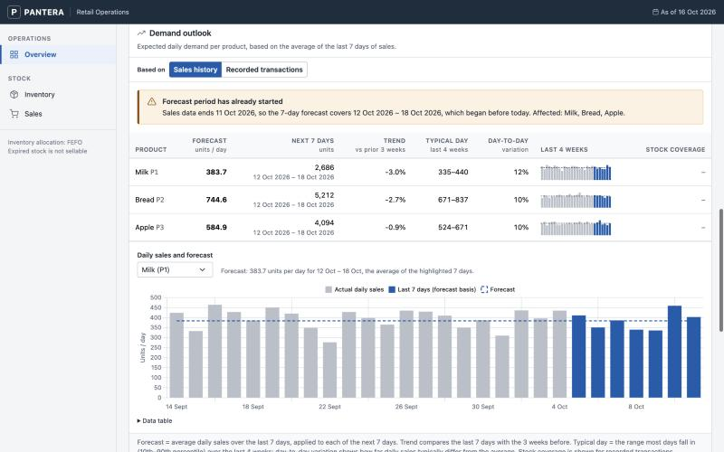

01Problem
Small food retailers lose stock when batches expire before they sell. PANTERA tracks stock batch by batch, estimates which batches are likely to be wasted, and shows what to act on first.
02Data / Context
Synthetic data, generated for the project: 120 days of daily sales for 3 products, and 4,000 historical inventory batches used to train and evaluate the waste-risk model.
03Approach
- Inventory logic: sales are taken from the batch that expires first (FEFO), validated, and written atomically so a failed sale never leaves files half-updated.
- Demand forecast by backtest: five methods compared with a rolling-origin backtest over 6 folds; a model only replaces the baseline if it clearly wins.
- Waste-risk model: an audit found data leakage in the original pipeline, so it was rebuilt with point-in-time features and a chronological train/validation split with overlapping cases removed.
- Operations rules: priority ranking of batches, markdown pricing by days to expiry, supplier score, bundle suggestions, and a data-quality report of invalid rows.

04Tools
- Python, pandas
- Data preparation, features, and evaluation
- scikit-learn, XGBoost
- Model pipelines and gradient-boosted models
- FastAPI, Jinja2
- Web application and API endpoints
- Chart.js, matplotlib
- Dashboard charts and evaluation plots
- pytest
- Automated tests, including leakage checks
05Result
- 0.087WAPE of the selected 7-day average, vs 0.091 for XGBoost (126 product-days)
- 22.16MAE in units for the waste-risk model, vs 32.45 for a rule-based heuristic
- 2,857validation snapshots in a purged chronological split
The simpler 7-day average won the demand backtest, so it is the method the application uses. The rebuilt waste-risk model beat both baselines and replaced the earlier model. All results are on synthetic data.
06My Role
Group project for an Artificial Intelligence course. Two teammates became inactive during the semester, so Hugo completed the project and the application himself.